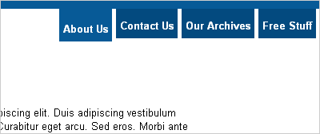

Navigation bars are the signposts of the web world: we take them for granted because of their ubiquity, but we’d all have a much harder time getting around without them. On most websites, nav bars hold a position of honor near the very top of the page, meaning they’re one of the first things your users see upon entering your site. As such, there’s a lot of pressure on navigation bars to look clean, act sophisticated, and ply the client’s wife with small talk and Manhattans while you close the deal.
Because of all that pressure, a lot of designers turn to the Tools of Yesteryear to ensure their navigation looks exactly the way they expect it to. Table cells, flash buttons, images, and (shudder) image maps make far too common an appearance at the top of otherwise respectable websites.
But you don’t need all that! Here’s a simple tutorial on how to create a perfectly respectable tabbed navigation bar with clean, happy XHTML and a few lines of CSS. I’m using tabs because I’m fond of them, but you could adapt these techniques to create whatever sort of navigation you’d like.
We’ll start with an unordered list, like so:
<ul id="nav">
<li><a href="/about/">About Us</a></li>
<li><a href="/contact/">Contact Us</a></li>
<li><a href="/archives/">Our Archives</a></li>
<li><a href="/free/">Free Stuff</a></li>
</ul>
Why an unordered list? Well, because when you get right down to it, what is a nav bar but a list of links, given in no semantically vital order? Nothing, I tell you. Nothing. Once we have our list, we have a page that looks something like this. I’ve applied a couple other styles to my body tag (moved the text away from the edges, set a font family, and given my page a top border), but as you can see, our navigation list is Plain Jane.
The next thing we’ll need to do is move our navigation to where we want it. I want my tabs to look like they’re coming out of that border I’ve applied to the body, so let’s move the list to the top right corner:
ul#nav {
position: absolute;
top: 10px;
right: 0; }
The “position: absolute;” rule pulls our list out of the normal flow of the document so that we can put it wherever we want. I then use a couple of other rules to move it 10 pixels from the top (i.e., the width of my border) and place it right along the right side of the page. If you wanted your navigation on the left, a rule of “left: 0;” would do the trick.
But our list still looks like a list (in everything but IE), and we can’t have that. The first step along the road to total list domination is to remove the margins, padding, and bullets that make our list so list-like. We’ll append our previous rule, so it now reads thusly:
ul#nav {
position: absolute;
top: 10px;
right: 0;
list-style: none;
margin: 0;
padding: 0; }
This is fairly straightforward: the “list-style” rule removes the bullets from our list, and then we set our margins and padding to zero to make the list fit snug against our top border, as you can see here.
Next up, we’ll put our list items in a single horizontal row. This is accomplished with a single rule:
ul#nav li {
float: left; }
As you can see, our list items are now arranged horizontally. Now let’s use some CSS magic to make them look a little more like tabs:
ul#nav li a {
display: inline;
float: left;
padding: 8px 5px 3px 5px;
margin-right: 5px;
background-color: #034a7f; }
We’re modifying the anchor tag here instead of the <li> tag for one primary reason: we want the entire tab to act as a link, not just the text portion. By applying our padding and background color to the anchor tag instead of the list item, we make our entire tab clickable. You can see the effect here.
Oh, and that bit at the top about displaying inline and floating left? Well, that’s what we in the biz like to call a “hack.” The two rules are working together to accomplish a single task: to make Internet Explorer 6 play nicely. The “float: left” property reminds IE6 that we want our clickable area to take up all the space we’ve given it, not just the text part – without this statement, only the text (and not the whole tab) is clickable in IE. But floating the links also introduces some weird spacing problems in IE: the browser suddenly decides to start doubling the size of our margins (more on that can be found here). But the “display: inline” rule reminds Internet Explorer that we really want all these elements in a snug little row, so no extra margin gets inserted.
Of course, after all that work our tabs are still a little tough to read, so let’s apply a couple more styles to our links:
ul#nav li a {
display: inline;
float: left;
padding: 8px 5px 3px 5px;
margin-right: 5px;
background-color: #034a7f;
color: #fff;
font-weight: bold;
text-decoration: none; }
This change is basic, but effective. I set the text color to white, the font weight to bold, and used “text-decoration: none;” to remove the underline from our tabs. The change is a big improvement.
Now, we could be done here, but I like to add a touch of interactivity to my tabs. Another benefit of making the tabs out of our anchor tags is that anchor tags respond to the :hover state in all browsers… including Internet Explorer (even though it ignores it everywhere else). So let’s add some style to our hover states:
ul#nav li a:hover {
padding-top: 12px;
background-color: #075a97; }
And just like that, our navigation bar responds to interaction. Hover your cursor over the tabs and watch how they drop down and change color in response to your every whim. That little touch of interactivity helps ensure your users know exactly what they’re clicking on, and adds a touch of sophistication to the top of your page. And better still, the tabs (and text within) grow and shrink automatically when your users change the page’s text size – I’d like to see an image map do that! With these simple styles in your bag of tricks, your client’s wife doesn’t stand a chance.
If you found this post useful, watch for a follow-up article later in the week, where I’ll show you how to make your navigation elements “self-aware” with just a touch of JavaScript and a couple extra CSS rules. If that sounds interesting, subscribe to the feed. If that sounds scary, you’ve watched too many Terminator movies.
Update: You can read the second article in this two-part series here.
How many Terminator movies are too many?
Well, I’d say that if you have to ask the question, it’s probably too many. :) But I promise the technique itself, while cool, isn’t too dangerous, and the odds of it leading to intelligent killer machines rampaging through time is really quite slim.
hi this is all good but.. just using a php script
is a lot simpler
//
Very useful, thank you.
Thank u so much! It worked fantastically!
I wonder if one misunderstanding leads to another. The code can more properly be written as:
ul#nav {
position: absolute;
top: 10px;
right: 0;
list-style: none;
margin: 0;
padding: 0;
overflow: auto;
}
ul#nav li {
float: left; }
ul#nav li a {
/* display: inline;
float: left;*/
display: block;
padding: 13px 5px 7px 5px;
/* line-height: 2em;*/
margin-right: 5px;
background-color: #034a7f;
color: #fff;
font-weight: bold;
text-decoration: none; }
Where it starts to get skewed with this attempt create a horizontal menu is the missing [overflow: auto;] declaration on the ul element. This declaration forces the ul parent to wrap around the floated li children, the use of the succeeding float of the a element is then not required (actually gets in the way in some browsers). And why is the [display: inline;] declaration there I wonder?
Now, the a element (normally an inline element) can usefully get the [display: block] declaration added. This then allows vertical settings (margins, padding etc.) to apply properly. Is this why line-height was included – because padding was not giving the required vertical spacing? I don’t know but set the top and bottom padding values as shown and line-height setting is redundant.
To end: in this example, because the ul element has [position: absolute;] which takes it out of the normal document flow, then [overflow: auto;] is not needed but I included it for completeness.
Regards
Revision
Couldn’t rest until I worked out why the display: inline; and line-height declarations were in the original. Well, they were there to make IE6 (and earlier) work of course! I started from a standards compliant browser and then forgot that IE6 is still being used, regrettably. So, here’s code that should work in most browsers (with the lines that fix IE6 all beginning with an underscore – meaning only IE6 reads them – all other browsers ignore them):
ul#nav {
position: absolute;
top: 10px;
right: 0;
list-style: none;
margin: 0;
padding: 0;
overflow: auto;
_height: 1%;
}
ul#nav li {
float: left;
}
ul#nav li a {
display: block;
_position: relative;
_display: inline-block;
padding: 13px 5px 7px 5px;
margin-right: 5px;
background-color: #034a7f;
color: #fff;
font-weight: bold;
text-decoration: none; }
ul#nav li a:hover {
padding-top: 17px;
background-color: #075a97; }
One final IE6 quirk. If you upload this to your host and run the file in IE6 it is fine. If you run it locally, then you may need to refresh the page before the menu will appear (tried the peekaboo fixes and they don;t work).
This only applies if the menu is positioned absolutely. If it is in the normal flow, it is fine. Can anyone suggest why?
Pingback: A Super Simple Horizontal Navigation Bar
Pingback: A Super Simple Horizontal Navigation Bar | CSS Heaven
Pingback: Mike Capson » Blog Archive » A Super Simple Horizontal Navigation Bar
Pingback: Saint John Web Design | Informative Computer Solutions » Blog Archive » A Super Simple Horizontal Navigation Bar
Not sure why but the changes you made broke it in IE, and it doesn’t respond as well in other browsers Revision. Perhaps we shouldn’t fix what isn’t broken?
It is partly working for me. The tab based menu bar looks perfect. Also the hoover works just fine. The selected also.
There is just one tiny thing that irritates me a lot.
I want the menu that is selected stay selected. When i click it it is selected. But i want the menu item to be selected all the time.
ai added the javascript into my masterpage but it doesn’t seem to work.
can you help me out. I like the solution it looks so easy to do.
A lot of these articles are really helpful, and this one could be as well.
I am a complete newb and the examples would help me out a lot. Unfortunately, the examples are not functioning because all of the source codes and results are the same.